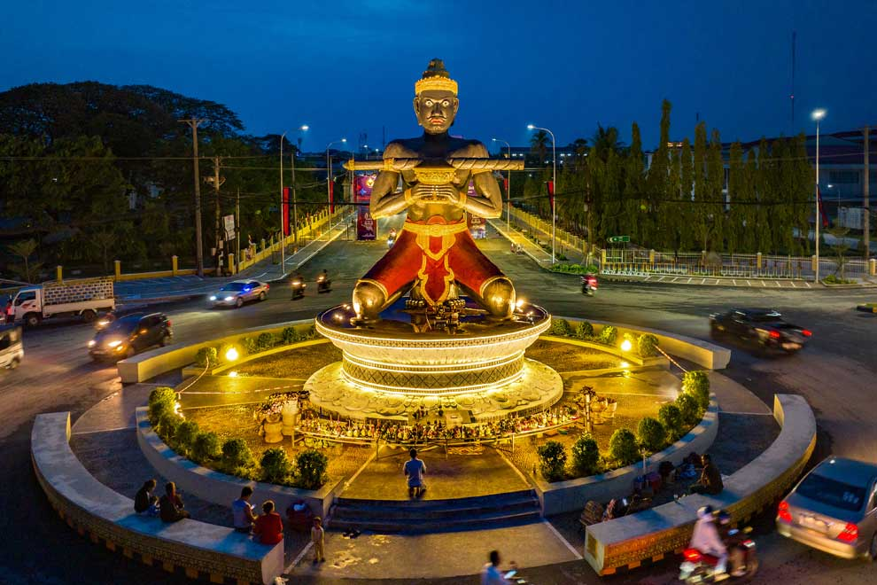

 Battambang (Khmer: បាត់ដំបង, UNGEGN: Bătdâmbâng [ɓatɗɑmɓɑːŋ]) is the capital of Battambang Province and the third largest city in Cambodia.
Founded in the 11th century by the Khmer Empire, Battambang is the leading rice-producing province of the country. For nearly 100 years, it was a major commercial hub and the capital of the Siamese province of Inner Cambodia (1795–1907), though it was always populated by Khmer people, with some ethnic Vietnamese, Lao, Thai, and Chinese. Battambang remains the hub of Cambodia's northwest, connecting the region with Phnom Penh and Thailand.
The city is situated on the Sangkae River, a small body of water that winds its way through Battambang Province. As with much of Cambodia, French Colonial architecture is a notable aspect of the city, with some of the best-preserved examples in the country. On 31 October 2023, Battambang was one of 55 cities declared to join the UNESCO Creative Cities Network in the field of gastronomy as well as crafts and folk art, design, film, literature, media arts, and music.[2] Other cities, such as Kratie, Siem Reap, and Kampot, may follow for the next cycle in 2025 onwards. [3]
Battambang was established as an important trading city with around 2,500 residents in the 18th century. The population was centered along a single road parallel to the Sangkae River (Stung Sangkae). In 1795, Siam (modern-day Thailand) annexed much of northwestern Cambodia, including the current provinces of Banteay Meanchey, Battambang, Oddar Meanchey, Pailin, and Siem Reap, into the province of Inner Cambodia. The Siamese ruled Battambang as a provincial capital through the Thai-speaking Khmer Abhaiwongse family,[4] a branch of the Khmer royal family, which governed for six generations until 1907, when the province was ceded to the French to be reunited with Cambodia as part of the French Indochina colony.
Following colonization by the French, an urban layout was developed, which resulted in an enlarged French colonial town. This first attempt at modernization led to well-defined streets laid in a grid pattern, building of urban structures and three main streets parallel to the Sangkae River, and the linking of both banks by the construction of two bridges in 1917. Military and prison facilities were also erected. Nineteen years later, a second urban development plan was implemented, with a newly constructed railway linking Battambang to Phnom Penh. The urban structures were extended to the west of the town, creating urban hubs oriented around the railway station. The large residential villas and public buildings built during this period of French development significantly changed the landscape of the previously remote city. A subsequent third urban development plan for Battambang involved the north, east, and south of the city. This vast undertaking, which required long-term planning to integrate all of the previous work, resulted in a modern provincial capital that was by far the most developed region of Cambodia outside of Phnom Penh.
Much later, more infrastructure and public facilities were built under the modernization program of the Cambodian government led by prince Norodom Sihanouk. Several provincial departments, a courthouse, and other public buildings were added on both sides of the river. Textile and garment factories were built by French and Chinese investors, the Battambang Airport was constructed, and the railway line was extended to the Thai border at Poipet. To serve the cultural needs of the population, numerous schools and a university were built as well as a sports centre, museum, and an exhibition hall.